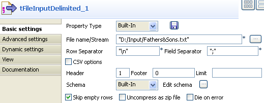
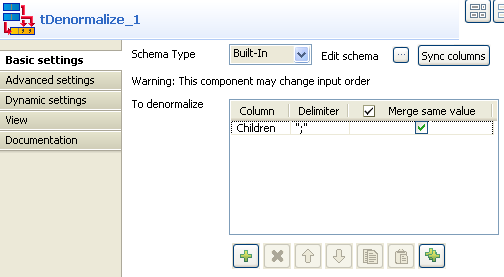

Scenario 1: Denormalizing on one column in Perl
This scenario illustrates a Perl job denormalizing one column in a delimited file.

- Click and drop the following components: tFileInputDelimited, tDenormalize, tLogRow.
- Connect the components using Row main connections.
- On the tFileInputDelimited properties panel, set the filepath to the file to be denormalized.
- Define the Header, Row Separator and Field Separator parameters.
- The input file schema is made of two columns, Fathers and Children.
- In the Properties of tDenormalize, define the column that contains multiple values to be grouped.
- In this use case, the column to denormalize is Children.
- Set the Item Separator to separate the grouped values. Beware as only one column can be denormalized.
- Check the Deduplicate items, if you know that some values to be grouped are strictly identical.
- Save your job and run it.




All values from the column Children (set as column to denormalize) are grouped by their Fathers column. Values are separated by a comma.
Scenario 2: Denormalizing on multiple columns in Java
This scenario illustrates a Java job denormalizing two columns from a delimited file.

- Click and drop the following components: tFileInputDelimited, tDenormalize, tLogRow.
- Connect all components using a Row main connection.
- On the tFileInputDelimited Properties panel, set the filepath to the file to be denormalized.
- Define the Row and Field separators, the Header and other information if required.
- The file schema is made of four columns including: Name, FirstName, HomeTown, WorkTown.
- In the tDenormalize component Properties, select the columns that contain the repetition. These are the column which are meant to occur multiple times in the document. In this use case, FirstName and Name are the columns against which the denormalization is performed.
- Add as many line to the table as you need using the plus button. Then select the relevant columns in the drop-down list.
- Define the delimiter for concatenated values. In this case, the comma is used.
- Save your job and run it.
- The result shows the denormalized values concatenated using a comma.
- Back to the tDenormalize components Properties, check the Deduplicate box to remove the duplicate occurences.
- Save your job again and run it.


This time, the console shows the results with no duplicate instances.